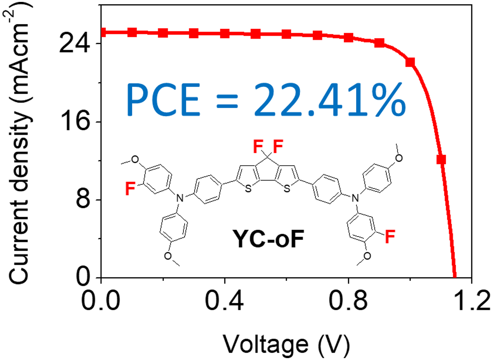

Scholarly article
Fluorination on cyclopentadithiophene-based hole-transport material for high-performance perovskite solar cells
Author affiliations and roles
- aDepartment of Chemistry, Soochow University, Taipei 11102, Taiwan
- bInstitute of Chemistry, Academia Sinica, Taipei 115024, Taiwan
- cCenter for Sustainability and Energy Technologies, Chang Gung University, Taoyuan 33302, Taiwan
- dCollege of Environment and Resources, Ming Chi University of Technology, New Taipei City, 24301, Taiwan
- eDepartment of Chemical and Materials Engineering, Chang Gung University, Taoyuan 33302, Taiwan
- fDivision of Neonatology, Department of Pediatrics, Chang Gung Memorial Hospital, Linkou, Taoyuan 33305, Taiwan
- gDepartment of Applied Materials Science and Technology, Minghsin University of Science and Technology, Hsinchu, Taiwan
- hDepartment of Chemistry, National Central University, Taoyuan 32001, Taiwan
Chemical Communications, 59, 14653 (2023).
Research topic: Hole-Transporting Materials
Abstract
A new class of fluorinated cyclopenta[2,1-b:3,4-b ']dithiophene (CPDT)-based small molecules, namely YC-oF, YC-mF, and YC-H, are demonstrated as hole-transporting materials (HTMs) for high-performance perovskite solar cells (PSCs). PSCs employing YC-oF as the HTM delivered an excellent efficiency of 22.41% with encouraging long-term stability. A new class of fluorinated cyclopenta[2,1-b:3,4-b ']dithiophene (CPDT)-based small molecules, namely YC-oF, YC-mF, and YC-H, are demonstrated as hole-transporting materials (HTMs) for high-performance perovskite solar cells (PSCs).
Graphical Abstract

OpenAlex citation history
Citations by year
- 02023
- 22024
- 82025
- 02026
View citation counts as a table
| Year | Citations |
|---|---|
| 2023 | 0 |
| 2024 | 2 |
| 2025 | 8 |
| 2026 | 0 |
OpenAlex citing works
Articles citing this work
10 citing articles with DOI, from 10 records indexed by OpenAlex.
Heteroatom engineering of <i>ortho</i> -fluorinated triarylamine based hole transport materials for enhanced performance in perovskite solar cells ↗
Journal of Materials Chemistry A · vol. 14, no. 11, pp. 6470-6478, 2025
DOI: 10.1039/d5ta07841e
Impact of fluorine substitution position on triarylamine-based hole transport materials in perovskite solar cells ↗
Physical Chemistry Chemical Physics · vol. 28, no. 3, pp. 2072-2080, 2025
DOI: 10.1039/d5cp04078g
Methoxy‐substituted triphenylamines served as a core to design innovative, cost‐effective hole transport materials essential for the development of efficient perovskite solar cells ↗
Journal of the Chinese Chemical Society · vol. 73, no. 1, pp. 37-54, 2025
DOI: 10.1002/jccs.70120
Infinite dimming black-to-transmissive copolymers featuring low chromatic color based on cyclopentadithiophene ↗
Chemical Engineering Journal · vol. 524, pp. 169120, 2025
Noncovalent Conformational Dopant‐Free Hole Transport Materials with Multisite Passivation for Stable <i>n‐i‐p</i> Perovskite Solar Cells ↗
Small · vol. 21, no. 36, pp. e2505961, 2025
Asymmetric Fluorinated Cyclopenta[2,1‐b:3,4‐b']Dithiophene‐Based Hole‐Transporting Materials for Perovskite Solar Cell ↗
Chemistry - An Asian Journal · vol. 20, no. 17, pp. e00719, 2025
Heterocyclic and heteropolycyclic moieties in organic hole transport materials for perovskite solar cells: Design, synthesis, and performance ↗
Coordination Chemistry Reviews · vol. 532, pp. 216500, 2025
Effect of <i>ortho</i> -fluorine substituted hole transport materials for perovskite solar cells: influence of rigid <i>vs.</i> flexible linkers ↗
Journal of Materials Chemistry C · vol. 13, no. 29, pp. 15082-15090, 2025
DOI: 10.1039/d5tc01565k
Judicious Molecular Design of 5<i>H</i>‑Dithieno[3,2‑b:2′,3′‑d]Pyran‐based Hole‐Transporting Materials for Highly Efficient and Stable Perovskite Solar Cells ↗
Advanced Science · vol. 12, no. 3, pp. e2410666, 2024
Interfacial Layer Materials with a Truxene Core for Dopant‐Free NiO<sub>x</sub>‐Based Inverted Perovskite Solar Cells ↗
Small · vol. 20, no. 33, pp. e2310939, 2024